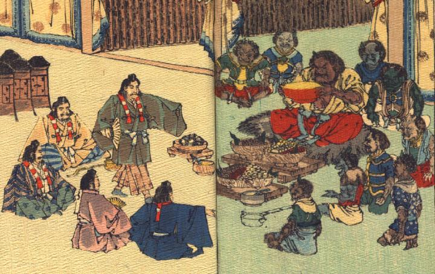

酒呑童子たちと源頼光一行が酒宴をともにしている。酒呑童子は中央に座り、大きな盃を持ち上げている。その周りに部下の鬼たちが座っている。頼光たちはみな山伏の装束を身につけている。1人が進み出て、片手に扇子を持ち、舞を披露している。
出典：親書誌：U426_nichibunken_0113：Les Ogres d'Oyeyama／日付：2006／資源識別子：U426_nichibunken_0113_0004_0000
Copyright (c)2010- International Research Center for Japanese Studies, Kyoto, Japan. All rights reserved.